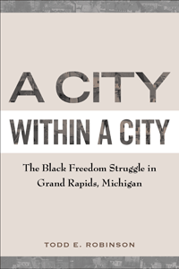

<body bgcolor="#FFFFFF" text="#000000" link="#0000FF" vlink="#CC0000" alink="#CC0000"><center><hr width="350" size="1" align="center" noshade>A view of the civil rights movement in the crucible of the North<hr width="350" size="1" align="center" noshade><p><a href="https://cdcshoppingcart.uchicago.edu/Cart/ChicagoBook.aspx?ISBN=9781439909218&&PRESS=temple" target="_top">Buy this book!</a> | <a href="https://cdcshoppingcart.uchicago.edu/Cart/Cart.aspx?PRESS=temple" target="_top">View Cart</a> | <a href="https://cdcshoppingcart.uchicago.edu/Cart/Cart.aspx?PRESS=temple" target="_top">Check Out</a></p><p></p></center><!--none//--><h1>A City within a City</h1>
<H2>The Black Freedom Struggle in Grand Rapids, Michigan</H2>
<h3>Todd E. Robinson</h3>
<P>cloth 1-4399-0921-0 $90.50, Dec 12, <FONT COLOR=#990033>Available</FONT>
<br>paper 1-4399-0922-9 $30.95, Dec 12, <FONT COLOR=#990033>Available</FONT>
<br>Electronic Book 1-4399-0923-7 $30.95 <FONT COLOR=#990033>Available</FONT>
<BR> 248 pp
6x9
3&nbsp;tables 12&nbsp;halftones
</P><h3 align="center"><P><font color="#996633">Chosen as the Grand Rapids Mayor's Book of the Year,
2016</font></P>
<P><font color="#996633">Outstanding Academic Title, <i>Choice</i>,
2013</font></P>
</H3>
<BLOCKQUOTE><I>"</I>A City within a City<I> is a vitally important and invaluable contribution to public history and public policy. It gives a much-neglected black community and its city’s history a farther-reaching self-perspective. Robinson’s emphasis on the ‘black freedom struggle’ and ‘black freedom fights’ in an American secondary city is a very useful analytical tool. What Robinson does so provocatively well is strongly support that the historical narratives of secondary cities are of equal importance in understanding both black communities and the racialized urban landscape of the United States. This book is certainly destined to be a much-talked-about volume, and the author is to be commended."</I><br>&#151<b>Randal Maurice Jelks</b>, Associate Professor of American Studies with a joint appointment in African and African American Studies at the University of Kansas and author of <I>African Americans in the Furniture City: The Struggle for Civil Rights in Grand Rapids</I></I></BLOCKQUOTE>
<P><i>A City within a City</i> examines the civil rights movement in the North by concentrating on the struggles for equality in Grand Rapids, Michigan. Historian Todd Robinson studies the issues surrounding school integration and bureaucratic reforms as well as the role of black youth activism to detail the diversity of black resistance. He focuses on respectability within the African American community as a way of understanding how the movement was formed and held together. And he elucidates the oppositional role of northern conservatives regarding racial progress.
<P><i>A City within a City</i> cogently argues that the post-war political reform championed by local Republicans transformed the city's racial geography, creating a racialized "city within a city," featuring a system of "managerial racism" designed to keep blacks in declining inner-city areas. As Robinson indicates, this bold, provocative framework for understanding race relations in Grand Rapids has broader implications for illuminating the twentieth-century African American urban experience in secondary cities.
<BR>&nbsp;<h2>Excerpt</h2><P>Excerpt available at <a href="http://www.temple.edu/tempress">www.temple.edu/tempress</a></p>
<BR>&nbsp;<h2>Reviews</h2>
<p><i>"</i>A City within a City<i> is well-written and coherent, and its focus on Grand Rapids fits well within the larger recent historiographical interest in the civil rights and black power era beyond the South. This engaging and insightful book will be of considerable interest to scholars focused on movement history, the African American experience in the Midwest, and the history of Michigan, as well as anyone interested in race relations and the struggle for racial justice."</i>
<br>&#151<b>Patrick Jones</b>, Associate Professor of History and Ethnic Studies and Undergraduate Chair at the University of Nebraska–Lincoln and author of <i>The Selma of the North: Civil Rights Insurgency in Milwaukee</i>
<p><i>"Focusing on Grand Rapids, Michigan, Robinson reveals how African Americans in this city fought against white racism in housing, education, economy, and other facets of black lives. Diary entries, published and unpublished documents of local and state organizations, local newspapers, and other sources enable a rich, deep investigation into the city's black history in the 20th century, especially the period between just before WW II and through the long civil rights era. Robinson's writing flows well and vividly captures the lives and struggles as well as the dignity of African Americans at the time. His work is not only a valuable addition to historical investigations of black Detroit and Michigan...but also the first quality scholarship on black Grand Rapids and one of the few urban history literatures on a secondary city. Summing Up: Highly recommended."</i> <br>&#151<b><i>CHOICE</i></b>
<p><i>"This monograph cogently argues for the significance of smaller cities as African American destinations and settings for the 'long civil rights movement.'... One of the book’s unique strengths is its focus on teenagers in the local black freedom struggle.... Robinson’s decision to drive the narrative largely through the recollections of black leaders and activists adds depth and interest.... </i>A City within a City<i> makes a solid contribution toward understanding the growth of African American political and social movements in Grand Rapids and beyond."</i> <br>&#151<b><i>Journal of American History </i></b>
<p><i>"</i>A City within a City<i> makes an important contribution to the growing body of scholarship employing the 'long civil rights movement' and 'black freedom studies' approach. In this study, Robinson successfully makes the case for the importance of examining the history of secondary cities by exploring the black fight for equality in Grand Rapids, Michigan at the community level in response to local conditions and concerns."</i><br>&#151<b><i>American Historical Review</i></b>
<BR>&nbsp;<h2>Contents</h2><P>
<p>Preface
<br>Acknowledgments
<br>Abbreviations
<br>1. “Rowing, Not Drifting”: Black Organizational Reform before World War II
<br>2. Citizens' Action: Managerial Racism and Reform Politics
<br>3. The Suburban Oasis: The Origins of Segregated Space
<br>4. The Mustache Saga: The Rise of Black Youth Protest
<br>5. A Black Child's Burden: Busing to Achieve Racial Balance
<br>6. Where Do We Go from Here? Setting the Course for Racial Reconciliation
<br>Conclusion: Secondary Cities and the Black Experience
<br>Notes
<br>Index
</P><BR>&nbsp;<H2>About the Author(s)</H2>
<P><b>Todd E. Robinson</b> is Assistant Professor of History at the University of Nevada, Las Vegas.</P>
<BR><H2>Subject Categories</H2>
<p><A HREF="/tempress/african.html" TARGET="_top">African American Studies</a>
<BR><A HREF="/tempress/sociology.html" TARGET="_top">Sociology</a>
<BR><A HREF="/tempress/history.html" TARGET="_top">History</a>
</p>
<p align="center"><a href="https://cdcshoppingcart.uchicago.edu/Cart/ChicagoBook.aspx?ISBN=9781439909218&&PRESS=temple" target="_top">Buy this book!</a> | <a href="https://cdcshoppingcart.uchicago.edu/Cart/Cart.aspx?PRESS=temple" target="_top">View Cart</a> | <a href="https://cdcshoppingcart.uchicago.edu/Cart/Cart.aspx?PRESS=temple" target="_top">Check Out</a></p><p><font face="Arial" size="1"><a href="copyright.html" onMouseOver="window.status='Web Copyright Policy';return true;" onMouseOut="window.status=''" title="Web Copyright Policy">&copy;</a> 2016 <a href="http://www.temple.edu" target="new" onMouseOver="window.status='Link to Temple University home page';return true;" onMouseOut="window.status=''" title="Link to Temple University home page">Temple University</a>. All Rights Reserved. http://www.temple.edu/tempress/titles/2223_reg.html</font></p>